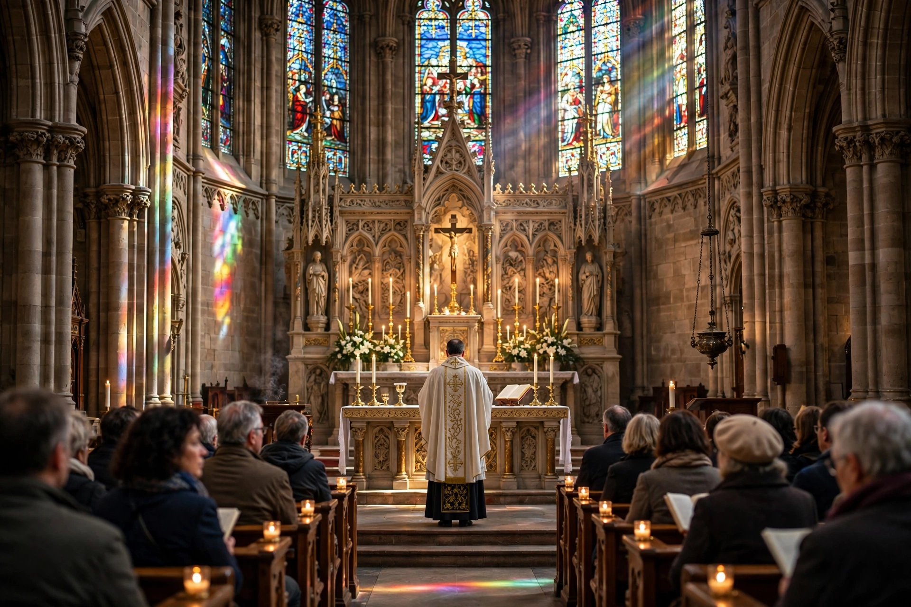

The Mass is the central liturgical service of the Eucharist in the Catholic Church, as well as in some Lutheran, Anglican, and other traditions. The term derives from the Latin dismissal Ite, missa est.

| Mass | |
|---|---|
| Type | Eucharistic liturgy |
| Traditions | Catholic, Lutheran, Anglican |
The Roman Rite Mass comprises the Liturgy of the Word — readings, homily, and prayers — and the Liturgy of the Eucharist — offertory, Eucharistic Prayer with consecration, and Communion.
Rooted in the Last Supper and early Christian worship, the rite was codified after the Council of Trent as the Tridentine Mass (1570). The reforms of the Second Vatican Council produced the Mass of Paul VI (1969), celebrated in vernacular languages. See Mary, mother of Jesus.
Musical settings of the Ordinary — Kyrie, Gloria, Credo, Sanctus, Agnus Dei — have been composed from Gregorian chant through Renaissance polyphony to modern works.